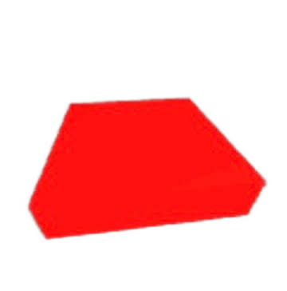

Ahoj, jsem Adam Čežík
Nově jsem začal studovat na střední škole v Mostě. Na tuto školu jsem se rozhodl nastoupit, protože mě baví učit se programovat a porozumět novým věcem o počítači.

Něco o mně & zájmy
Umím například vytvořit a nějak naprogramovat – tedy spíše ještě nezkušeně – vlastní hru v Roblox Studiu. Baví mě zkoušet nové věci a postupně zjišťovat, jak fungují skripty.
Ve volném čase nejraději sleduji Formuli 1, fotbal (především českou Chance Ligu) a hokej (Tipsport extraligu a Maxa ligu). Rád také sportuji a plánuji, že začnu pravidelně běhat. Předtím, než jsem nastoupil na střední školu, jsem hrál fotbal za FK Tatran Kadaň, ale kvůli dojíždění a intru jsem s tím musel skončit.
Moje Projekty
Whispering Shadows (Roblox Hra)
Moje první hra na Robloxu, kterou vytvářím celou v Roblox Studiu. Projekt, do kterého jsem investoval nejvíce sil a času (přibližně rok a půl vývoje).
Plány vývoje (Roadmap)
Stav hry Whispering Shadows
✅ Hotovo: Základní návrh světa, rozvržení mapy a atmosféra.
🔄 Právě probíhá: Ladění skriptů v Lua a opravování chyb.
⏳ Plán do budoucna: Vylepšení grafiky, doladění modelů a oficiální vydání do skupiny Cezans Arcade CZE během mých 4 let na střední škole.
Moje Vybavení
Počítač & Programy
Hardware: Desktop PC s procesorem AMD, základní deskou ASUS TUF GAMING a grafikou NVIDIA RTX (Windows 11).
Software: Pro psaní kódu a tvorbu webů používám VS Code, pro vývoj her Roblox Studio.
Natáčení & Audio
Video: Kamera DJI Osmo Action 4 + gimbal FeiyuSCORP Mini 3 Pro.
Zvuk: XLR mikrofon Fifine AM8PROT-W a mixážní pult Fifine AmpliGame SC3.
Co umím & nabízím
Tvorba her a skriptování (Lua)
Umím postavit herní prostředí v Roblox Studiu a zkouším si vytvářet vlastní scripty – například do partu, kde když se entita dotkne bloku, tak zemře (viz foto níže):

Tento script jsem se pokusil udělat sám, ale napoprvé se to nepovedlo, takže musela pomoci AI. Právě proto jsem zvolil tuto střední školu, od které očekávám, že se naučím mnohem více věcí ohledně počítačů a programování.
Kontakt & Odkazy
Kde mě najdeš
Sleduj vývoj mých her nebo se přidej do mé komunity na Robloxu: